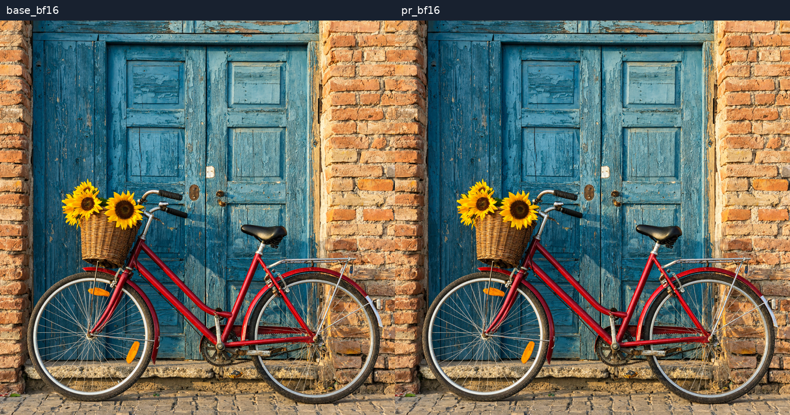
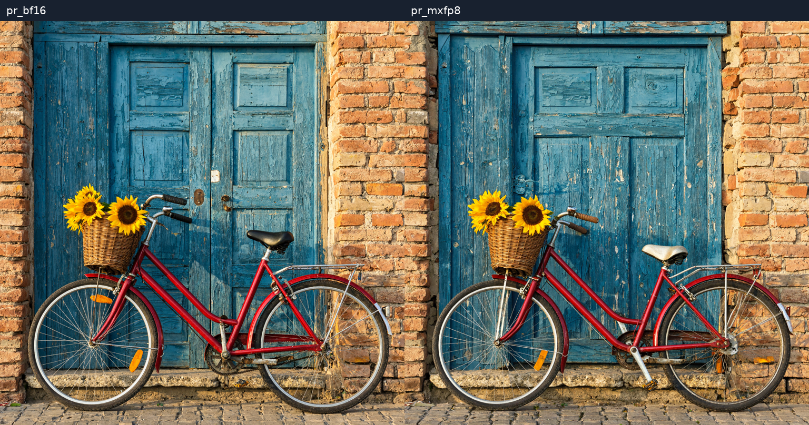
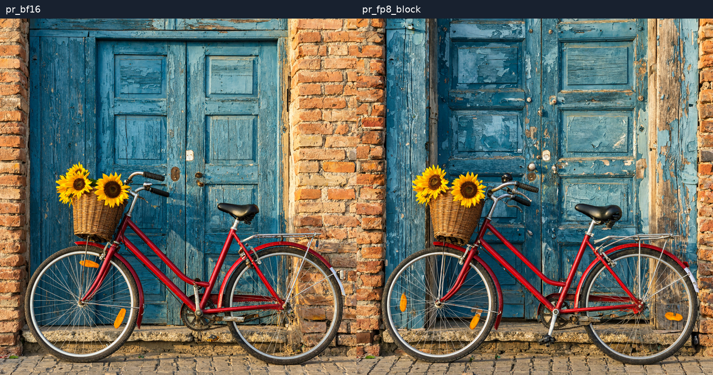
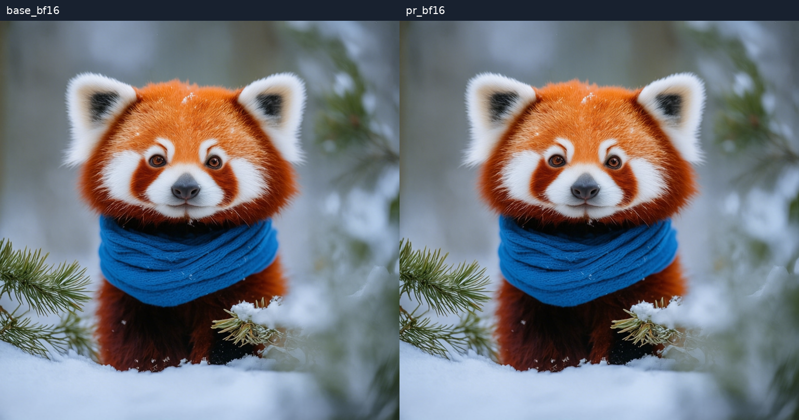
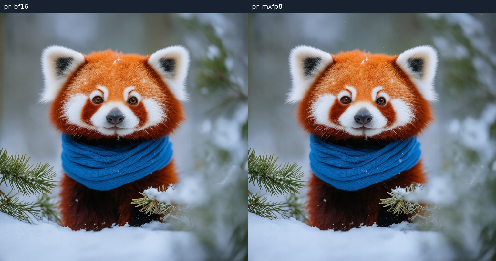
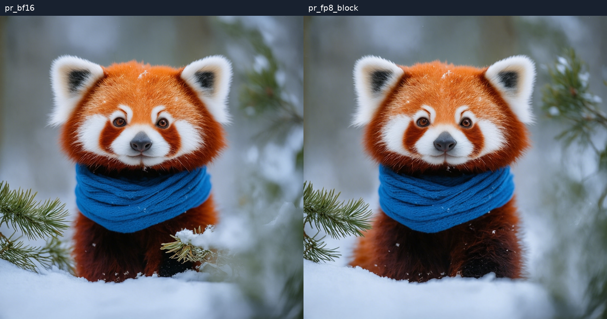

Matched model revisions, prompts, seeds and sampling settings. One example per model. Scores measure full-resolution pixel differences; they do not establish perceptual preference or broad quality equivalence. MP4s and image previews are viewing copies; metrics use native lossless source frames. The public bundle includes full-resolution still images, pixel SHA-256 checksums and reproducibility scripts; lossless video frames are produced by rerunning the script.
| Model | Reference → candidate | SSIM ↑ | PSNR dB ↑ | LPIPS ↓ |
|---|---|---|---|---|
| h3_image | base_bf16 → pr_bf16 | 1.000000 | inf | 0.000000 |
| h3_image | pr_bf16 → pr_mxfp8 | 0.573613 | 15.4368 | 0.332904 |
| h3_image | pr_bf16 → pr_fp8_block | 0.474792 | 14.3196 | 0.423636 |
| h3_video | base_bf16 → pr_bf16 | 1.000000 | inf | 0.000000 |
| h3_video | pr_bf16 → pr_mxfp8 | 0.578043 | 19.2000 | 0.339013 |
| h3_video | pr_bf16 → pr_fp8_block | 0.466565 | 17.5261 | 0.428803 |
| qwen_image | base_bf16 → pr_bf16 | 1.000000 | inf | 0.000000 |
| qwen_image | pr_bf16 → pr_mxfp8 | 0.966912 | 29.9277 | 0.041271 |
| qwen_image | pr_bf16 → pr_fp8_block | 0.924692 | 21.8433 | 0.103081 |
| wan22 | base_bf16 → pr_bf16 | 1.000000 | inf | 0.000000 |
| wan22 | pr_bf16 → pr_mxfp8 | 0.868591 | 24.5728 | 0.097001 |
| wan22 | pr_bf16 → pr_fp8_block | 0.569438 | 16.8421 | 0.320863 |






A red bicycle leaning against a weathered blue wooden door, a wicker basket filled with yellow sunflowers, warm afternoon sunlight, intricate wood grain and brick textures, realistic photography.
A red fox walks slowly through a sunlit meadow of tall grass and white wildflowers. A gentle breeze moves the grass and the fox's fur. The camera tracks smoothly alongside the fox, realistic cinematic detail, natural lighting.
A small red panda wearing a blue scarf in a snowy forest, soft morning light, detailed fur, snowflakes on pine branches, realistic wildlife photography.
A red fox walks slowly through a sunlit meadow of tall grass and white wildflowers. A gentle breeze moves the grass and the fox's fur. The camera tracks smoothly alongside the fox, realistic cinematic detail, natural lighting.
[]